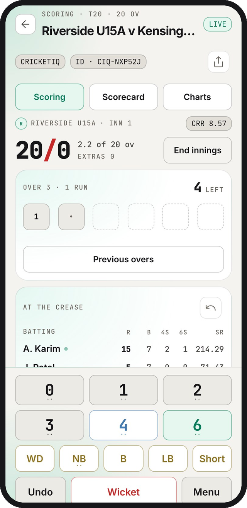
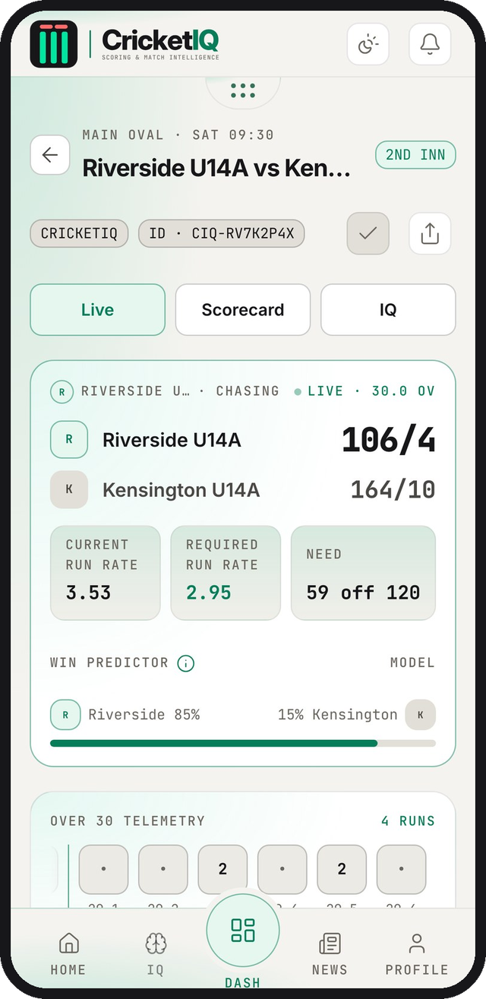
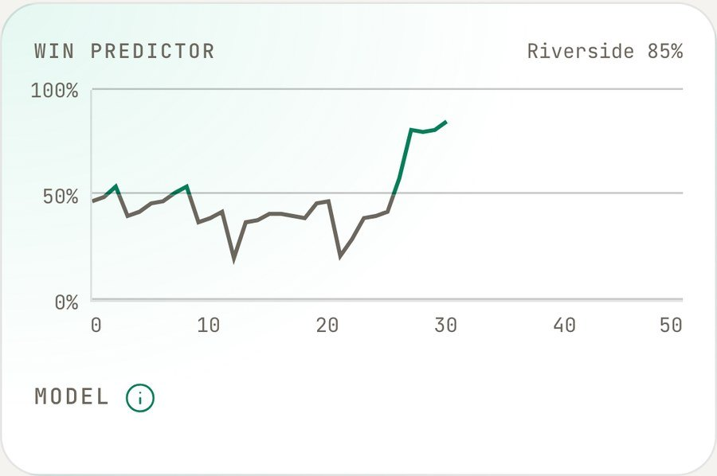
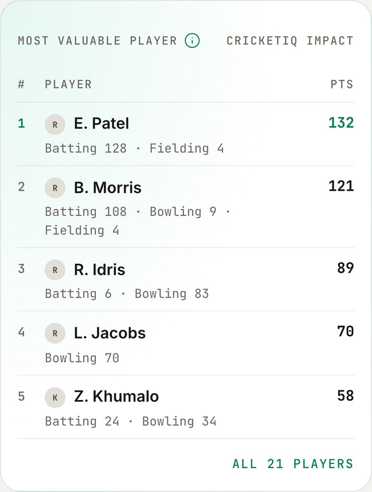
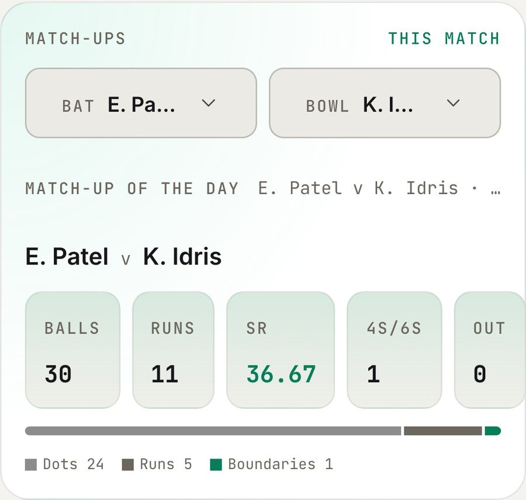
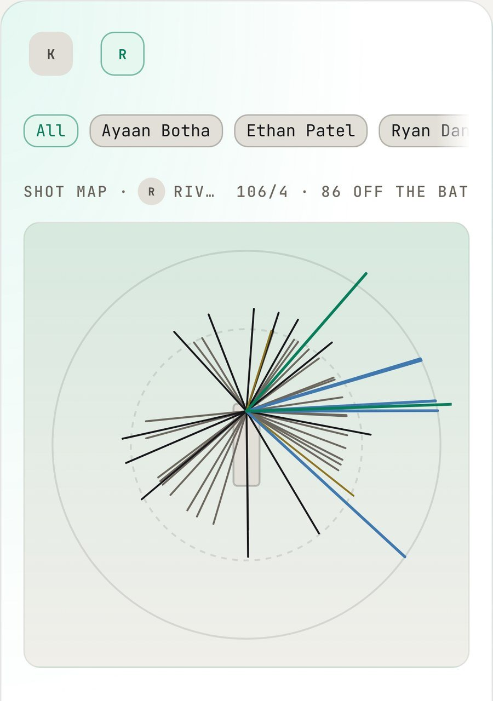
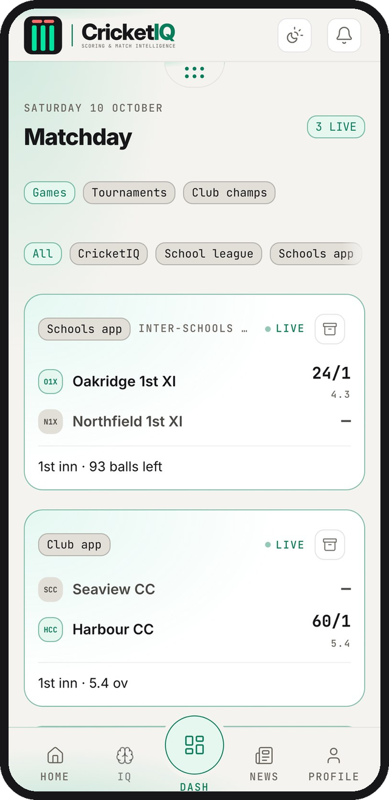
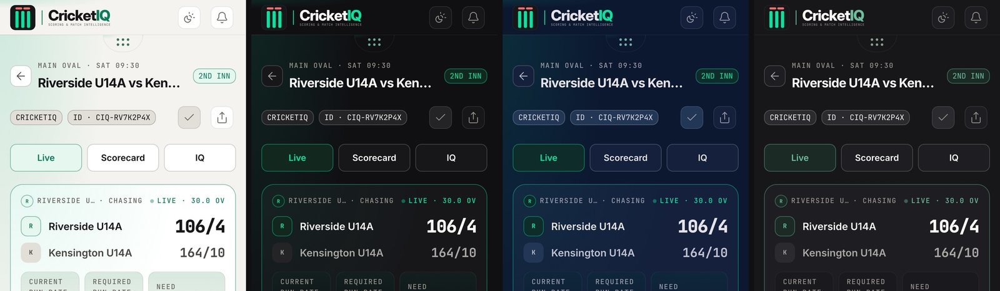

Score it once. Everyone sees it.
The scoring app, the live scoreboard and the match insights, all in one. The scorer taps each ball once. Coaches, parents and the club see it live, and every ball is kept safe on the scorer’s phone, even with no signal.


Real CricketIQ screens in the Daylight look. Player names changed.
The signal drops and the score stops. A wrong ball from three overs back never gets fixed, so the book and the app tell different stories. Parents in the car park keep refreshing. And at the end, the scorecard says what happened but not who really won the game.
That is match day at most school and club grounds. CricketIQ is built for it.
01 · For scorers
One tap a ball, keys you can’t miss
Built for the person at the boundary. The keys are thumb-sized and read clearly in direct sunlight, and the app does the remembering so the scorer can watch the game.
- Tap where the ball went and the shot map draws itself
- The next bowler is already picked from the rotation
- You choose who bats next. The app never guesses
- Set the game up the night before and start once the toss is done
Made a mistake? Change any ball, even one bowled ten overs ago. Swap a batter or bowler after the fact, or correct a total to match the book. Every change asks for a reason and is kept on record, and a corrected score is marked Altered, so everyone can still trust the result.
Saved on the phone first
Every ball is kept on the scorer’s phone the moment it is tapped.
Sent when the signal returns
Nothing waiting to send is ever thrown away.
Checks itself every over
If the phone and our system ever disagree, it puts it right on its own.
02 · No signal
Never lose a ball, even with no signal
Many scoring apps need a steady connection, and school fields often have one bar or none. CricketIQ keeps scoring regardless. Score a whole festival offline, and the moment the phone connects, every game goes up, ball by ball.
The score parents see is checked against the scorer’s phone every over, so it always matches the book. First used in a live school match in October 2026.
Home says 6 · Away says 4
Away scorer: R. Naidoo
Added to the scorecard for both teams
482 913
Sample match. Names are examples.
03 · Scoring together
Both teams score. Every ball is agreed.
Each side usually keeps its own book, and the two are compared at the end of the day, if at all. One scorer can’t know everyone on the other team, so the visiting names are a guess. When the books end up four runs apart, nobody knows since which ball.
Switch on collaborative scoring and the other team scores the same game on their own phone. The two books are compared ball by ball, live. A difference shows at once, not at the end, and each side names its own bowlers and fielders.
- One agreed score, and no end-of-day disputes
- Hand over at the break with a six-digit code or a QR, and every ball moves to the next phone
- Add extra scorers to any match
Match rules
| Balls per over | 8 |
| Runs for a wide | 2 |
| Free hit on a no-ball | On |
| Max overs a bowler | 4 |
| Powerplay overs | 6 |
An example set of junior match rules.
04 · The rulebook inside
The Laws of Cricket built in, plus your own rules
The app knows a wide from a no-ball, runs a free hit, handles every form of dismissal, and will not accept a ball that cannot happen. Penalty runs, dead balls and conduct warnings are all logged.
Junior and club cricket rarely plays to the standard rules alone. Set 8-ball overs, two runs a wide, bowler limits or powerplays once on a tournament, and every game in it follows them.




From the CricketIQ app. Player names changed.
05 · IQ: match insights
Numbers that tell you why
A scorecard says what happened. It rarely says why, or who really won the game. The scorer’s taps already hold the answer, and IQ turns them into something a coach can use, during the game and after it.
- Win chance, ball by ball. Both innings on one chart with the target pace drawn in, built on the Duckworth-Lewis tables and tested against 44 real games
- Match-ups. Any batter against any bowler, live, at full time and across the season
- Shot maps and phases. Where each batter scores, and whether the game was won in the powerplay, the middle overs or at the death
- A fair player of the match. Worked out from every ball, with batting, bowling and fielding all counted, and every point explained in the app
Better feedback after every game: sit down with a player, open their page, and talk through their shot map, the bowlers who troubled them, and how they helped win the game. No extra work for anyone.

From the CricketIQ app. Team and platform names changed.
06 · Parents and supporters
Follow every ball from anywhere
From the car park, the office or overseas. The score updates in seconds with no refreshing, and commentary is written for every ball, with fifties and hat-tricks called.
A Saturday usually means four tabs: the school league site, another scoring app, the club’s own app and the team chat. The Dash puts every game you care about on one board, including games scored on other platforms.
- Follow a team, a player or a tournament, and its games appear on their own
- Games near you, found from your location or your town
- No account needed to watch a game
- Share links name the game in any chat
Run your cricket without the paperwork
From the 1st XI to the juniors, every game scored the same way, and the admin around it done for you.
Tournaments and club champs
Set the rules once and the points table keeps itself after every result. Top run scorers, wicket takers and player of the match are worked out for you.
Results page and PDF
A full scorecard anyone can open with no app needed, ready to share the moment a game ends.
A record players keep
Every match, player and team gets its own CricketIQ ID. Change clubs or schools and the history goes with you.
Safe for juniors
Guardians can be linked to junior players. Coaches see U14 and U15 season by season, so age groups never mix.
Light enough for one bar of signal
Small, careful with your battery, and it looks after itself when things go wrong.
¼ MB
To follow a whole match
Less data than a single phone photo. Only the new ball travels, never the whole page again.
15,000
Fans watching at once
Tested with 15,000 people following at the same time, with room to spare for a busy Saturday.
3,500+
Checks before every update
Every update is tried on a test version first. If one ever stumbles on a phone, the app repairs itself.
0
App store downloads
Open a link and add it to your home screen. It works offline from then on, on iPhone, Android, iPad and desktop.
Ads will never get in the way of the score
Scoring apps are filling up with banners, pop-ups and videos between overs. They slow the phone, use data and cover the keys a scorer needs. Nothing ever goes over the scoring pad or the live score on CricketIQ. That is a design rule we build to, now and as we grow.

Four looks, one for every light
Daylight for direct sun, Cockpit for evening games, Mission and Calm for easier reading. Colour means one thing only: green is a six, blue a four, red a wicket, gold an extra. Each is also written out, so nobody relies on colour alone.
Priced for your club, school or tournament
A school with twelve sides and a weekend tournament need different things. Tell us how many teams you run and what you want to start with, and we will come back with a figure before you commit to anything.
A quote built on your teams and your season.
- Scoring, live scores and IQ insights for every team you register
- Tournaments, tables and results pages with your own match rules
- Nothing to install from an app store
- Parents and supporters watch with no account
Pricing and terms for your club, school or tournament are set out in writing when we quote. Player and match data is handled under our Privacy Policy and POPIA. CricketIQ terms apply.
Live today, and what comes next
Here is what you can use on Saturday, and what we are still building. Early clubs and schools help decide the order.
| Scoring with no signal, checked every over | Live |
| Fix any ball, with a record of every change | Live |
| Handover and collaborative scoring | Live |
| The Laws of Cricket and your own match rules | Live |
| Win chance, match-ups, shot maps, phases and player of the match | Live |
| Tournaments, tables, results page and PDF | Live |
| The Dash, follows and four looks | Live |
| Weekly school rankings, with the formula published 1st XI, U15A and U14A first. The engine is largely built and being finished. | This season |
| Fixtures and competition pages, net run rate on tables | This season |
| Club and school pages in your colours, with your crest | This season |
| IQ search for any player, team or competition | This season |
| Field planner, set against a batter’s real shot map | Later |
| A win predictor that learns from every game played | Later |
| Club sponsorship that never covers the score A concept for discussion with clubs and sponsors. | Later |
What you are used to, and what you get
- No signal. Most apps stall and balls can go missing. CricketIQ scores offline and sends every ball later.
- A mistake. Usually hard to fix once the over is done. Here, fix any ball, any time, with a reason.
- Player of the match. Usually a guess, or the top scorer. Here, worked out from every ball and explained.
- Handing over. Usually start again on a new phone. Here, a code or QR moves every ball.
A general picture of the market, not any one product.
Who it is for
Clubs, schools and tournament organisers who score their own games, and the scorers, coaches and families around them. If your scorer battles with signal at the boundary, or parents are still asking for the score in the team chat, start here.
Talk to us about your club, school or tournament
We will come to a practice match and show you how it works on your own teams. You score, your parents follow, and you tell us what to build next.
Set up your club
Register your club, teams and players. Each gets its own CricketIQ ID.
Score your games
From the 1st XI to the juniors, and parents follow live.
Shape what comes next
Early clubs and schools help decide what we build.
Pricing on request for each club, school or tournament. Want to look first? Open CricketIQ. Terms apply.